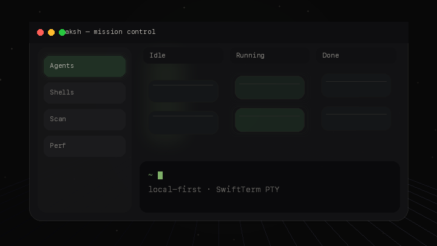

Kanban for tasks & sessions
Idle, Running, and Done mirror attention and CPU — not generic columns.
02 — Answer first
Laksh keeps Kanban, terminals, and a grounded view of what is running on your machine in one quiet workspace — so you spend less time tab-hopping and more time shipping.
What you get in one glance
Laksh is a local-first macOS app that ties tasks, agent sessions, and plain shells to a Kanban board, then opens the real terminal with a double-tap. A lightweight scan shows which CLI agents are alive on your Mac — with guardrails so you do not mistake helpers for top-level processes.
Power state should be visible: idle, running, done — not buried in window titles.
SwiftTerm gives correct PTY + keyboard routing; Laksh focuses on orchestration, not reinventing VT100.
Clone, swift build, run scripts/build-app.sh, open the bundle — you are in.
02b — Motion chunk (GIF)
Built in-repo with Pillow + ffmpeg (no screen recording): parallax
particles, perspective grid, spring-eased cards, a sweeping accent pulse, and a typewriter
terminal strip — motion patterns riffing on an OpenClaw (GLM 5.1) creative pass.
Regenerate: .venv/bin/python scripts/render-website-promo.py (see README).

website/media/ — regenerate with scripts/render-website-promo.py.
03 — Chunking
Agent work spreads across browser dashboards, terminal tabs, and ad-hoc notes. Context gets re-explained every time you switch surfaces. Laksh narrows the loop: one native window, project-bound sessions, and a board that mirrors how you think about power and attention on your Mac.
04 — Signposted flow
First you orient, then you act, then you release resources deliberately.
Laksh sits beside your existing tools — it does not replace your shell muscle memory.
05 — Comparison template
Tables keep cells short so you can scan tradeoffs quickly — the same discipline used in strong long-form assistant answers.
| Dimension | Laksh (macOS) | Terminal tabs | Web dashboards |
|---|---|---|---|
| Context | Project paths, tasks, and sessions stay linked in one window. | Great per shell; easy to lose shared state across tabs. | Often account-centric; may not mirror your local tree. |
| UI model | Native SwiftUI + AppKit — standard Mac patterns. | Text-first; weak at board-level overviews. | Browser tabs — another context switch away from files. |
| Agents | Kanban + terminal for CLI agents you choose to run. | Infinitely flexible; you glue everything yourself. | Fast to try; cloud routing depends on vendor defaults. |
| Privacy | Local-first; network is what your agents do in shells. | Stays on machine; you control outbound calls. | Check vendor policies for prompts and logs. |
| Best for | Daily driver when you want native UX + honest power state. | Deep debugging, CI, raw control. | Demos or orgs that mandate web clients. |
06 — Pillars
Each card is one idea — easy to scan, easy to disagree with precisely.
Idle, Running, and Done mirror attention and CPU — not generic columns.
PTY-backed shells with correct keyboard paths for both native and agent sessions.
Summaries for external CLI agents with filtering to avoid killing helpers by mistake.
Move work to Done when you want the machine quiet — gesture matches intent.
CPU and memory sampled gently — monitoring should not dominate the machine.
Work survives relaunch; running items reset to idle until you resume deliberately.
07 — macOS scope
Windowing, responder chains, and terminal embedding are first-class on the Mac. A Windows or Linux port would be a different product — not a checkbox release.
08 — Progressive disclosure
Open only the topics you care about — same pattern as layered assistant answers.
SwiftPM project with SwiftTerm for terminal emulation. SwiftUI for layout, AppKit bridges for first-responder-safe terminal hosting.
Laksh is released under the MIT License (see
LICENSE in the repository). Contributions welcome under the same terms.
This marketing site is static. The app is local-first; any network use comes from the agents and commands you run inside terminals.
PTY correctness, scrollback, composition, and keyboard routing are production-grade problems. SwiftTerm solves them so Laksh can focus on orchestration and inspection UX.
Expect to reason about Full Disk Access only if you add features that require it. For the current open-source build, follow macOS signing and sandbox notes in your own distribution pipeline.
09 — Framework
This page applies a document-first information architecture distilled from public discussions of strong assistant outputs: answer-first blocks, chunked sections, comparison tables, signposted flows, and progressive disclosure.
The framework, tokens, checklists, and contribution rules live under avasis-ai as claude-design-reverse-engineering. It explicitly describes itself as community reverse engineering of observable UX patterns, not proprietary source extraction.
Key takeaway: tokens live in packages/tokens/tokens.css; this site
vendors the same variables as cd-tokens.css so Laksh stays self-contained.
10 — Recap and build
From the laksh directory: compile, bundle, launch. That is the whole distribution
story for contributors today.
10b — Source
Laksh and the Claude-design framework are public MIT projects. Fork, audit, and ship your own builds — no vendor lock-in for this site or the app shell.
11 — FAQ
Short answers — swap in your exact policies when you publish binaries.
Laksh does not exfiltrate shell contents. Whatever your agents print or upload is still governed by those tools — treat sessions like any other terminal.
Laksh orchestrates local processes. If your CLI agent supports a gateway or local model, run it the same way you would in Terminal.app.
No. Laksh is additive: use it when you want a board and inspection surface, keep your existing shell setup for everything else.
Start with defaults. Add permissions only when a feature truly needs them, and document why in your fork’s readme before you ship to others.
Laksh does not auto-approve file mutations. Use your agent’s native safeguards, dry-run flags, and code review — the UI is control, not autopilot.